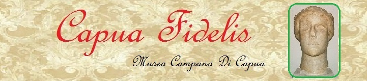

"Capua Fidelis" (1239)
La testa di donna, allegoria della città di Capua, può essere definita la più classica creazione italiana prima
del rinascimento.
Si trovava sulla Porta Di Capua, prima che scomparisse dalla città ed oggi è conservata nel Museo Campano Di Capua, nella stanza
federiciana, a sinistra, insieme ad altre due teste: Taddeo Da Sessa e Pier Delle Vigne.
HOME PAGE
"Capua Fidelis" (1239)
The female head, personification of the city of Capua, can be defined the most
classical italian creation
before the Renaissance.
It was situated on the Gate of the Two Towers, before it disappeared from the city and today is placed in the Museo Campano Di Capua, in the federician
room, on the left, with other two heads: Taddeo Da Sessa and Pier Delle Vigne.
HOME PAGE